Park Doul 박도울
박도울AI animator
기획부터 편집과 사운드 마감까지 제작의 전 과정을 수행합니다.
컷이 틀어지면 원인을 입력과 측정에서 찾습니다.
그렇게 내린 판단은 검사 도구와 에이전트 규칙에 반영해 시스템을 보완합니다.
SNS 채널
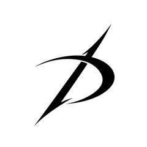
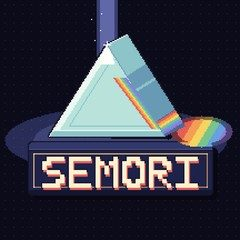
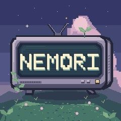
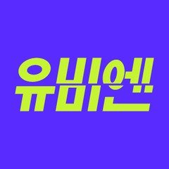
팔로워 수 2026-11 기준
System
에이전트와 검사 도구를 직접 만들어 제작에 사용하고, 팀이 같이 쓰는 제작 방식과 교재도 만듭니다. 판단은 문서로 남기고, 되풀이되는 판단은 도구에 반영합니다.
- 01제작 시스템 보기 →
영상 제작 시스템 구축
역할별 에이전트들이 샷 설계·편집·심의·사운드 등을 나눠 맡고, 자동 검사가 기준에 걸린 생성과 납품을 막습니다.
자세히
- UBN 결정 192건을 에이전트 규칙으로, 그중 75건은 자동 검사·편집 도구로
- 규정을 어긴 생성 요청을 나가기 전에 막는 장치(판정 불가)
- 불량이 하나라도 있으면 올리지 않는 자동 검사기(네모리·세모리)
- 02제작 허브 보기 →
팀 협업을 위한 제작 허브
CGV AI 영화제 팀의 노션 제작 허브와 공용 프롬프트 태그를 만들어 운영했습니다. 작품은 우수상을 받아 CGV 극장에서 개봉했습니다.
자세히
- ㈜바른손이앤에이 — 팀의 제작 절차가 되는 가이드라인 문서를 작성했습니다(대외비로 인해 작품 내용이 없는 네 쪽 공개)
- 03교재 보기 →
교육 및 강의
새 툴, 모델 등이 나오면 항상 먼저 써 보고 가르쳤습니다 — HATESLOP·앰퍼샌드·기업 출강 등
자세히
- 2026 앰퍼샌드 — Claude Code로 훅·SDD·MCP·스킬·서브에이전트를 거쳐 사이트를 배포까지 가는 교재
- 2024–25 HATESLOP — 프로듀서 파트 커리큘럼 설계·교재·강의(미드저니 · ComfyUI · Runway · 사운드 · AI 필름 제작 등)
- 채널톡 임직원 출강(교재 「Midjourney 간단 가이드북」 공개) · LG유플러스 임직원 멘토링
Work
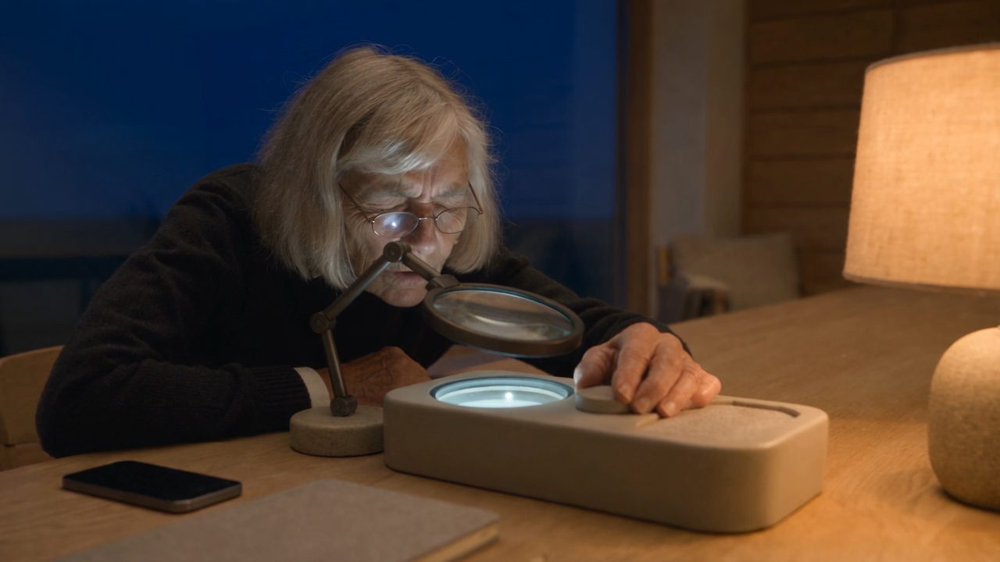
판정 불가
연세대 AI 콘텐츠 경진대회 최우수상
키워드: Seedance 2.5캐릭터 일관성AI 에이전트Premiere Pro
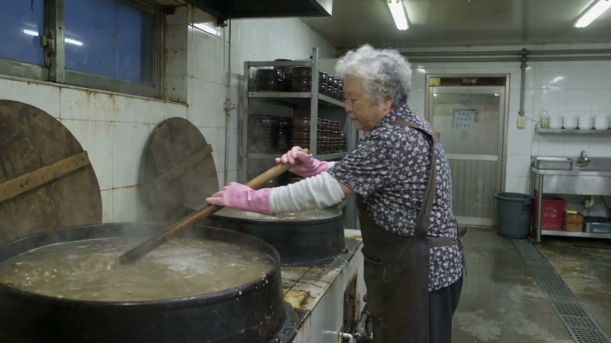
UBN — 저승 휴게소 국밥집
키워드: Blender 프리비즈AI 에이전트 6종After EffectsElevenLabsSeedance 2.5
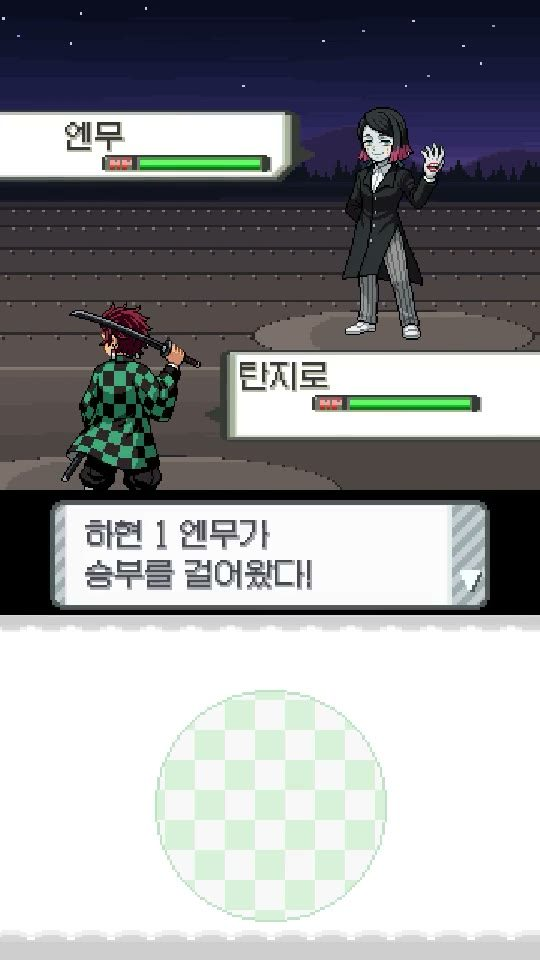
네모리 픽셀아트 릴스
키워드: 자동 검사기PythonBlenderNano Banana Pro
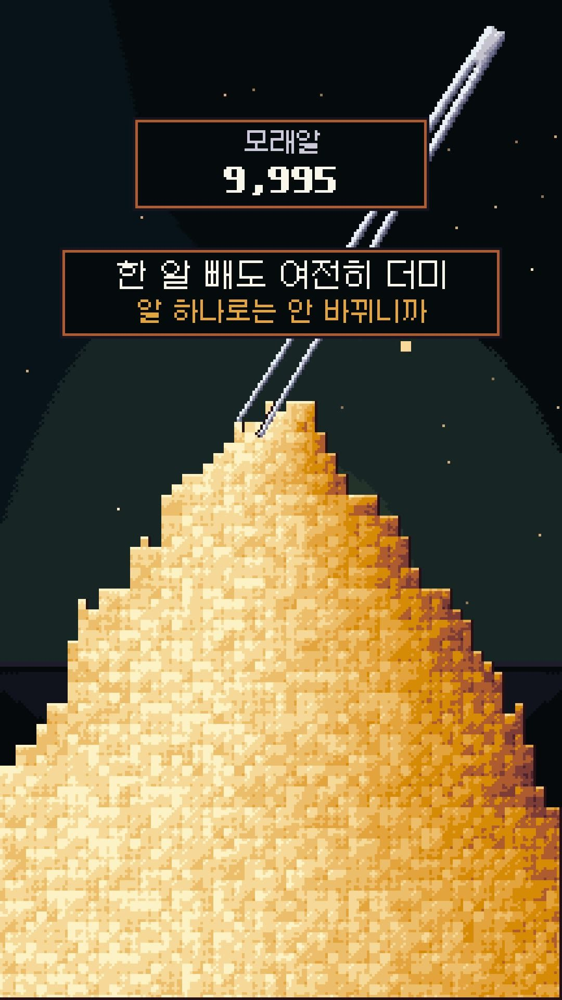
세모리 픽셀아트 지식 릴스
키워드: 자동 검사기PythonKling
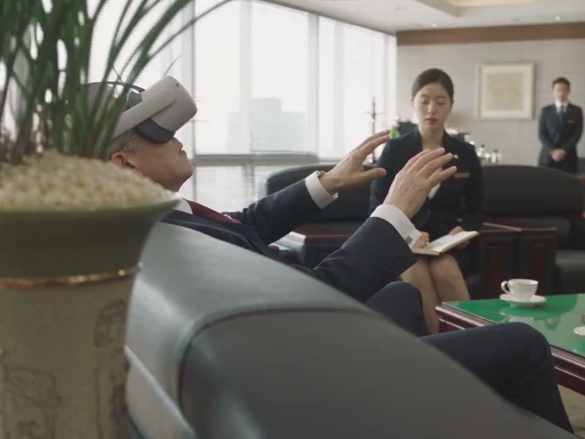
실사풍 코미디 숏폼과 제작 스킬
키워드: Claude Code 스킬Seedance 2.5모션 전이CapCut
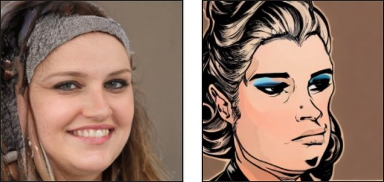
face2comics — 얼굴→만화 변환, 확산 vs 플로우 매칭
키워드: Stable Diffusion 1.5InstaFlow모델 비교 실험
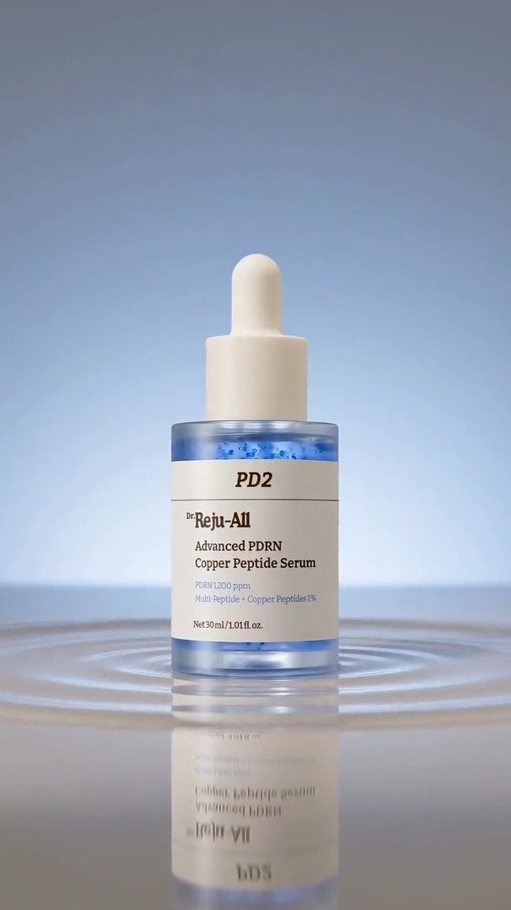
닥터리쥬올 제품 광고 영상 외주
키워드: ComfyUI오픈소스

피노키오: 비긴즈
4인 팀 — 팀 제작 허브 설계·운영, 실험실 씬 생성~Premiere 편집, 후반부 소스
CGV AI 영화제 우수상CGV 극장 개봉
키워드: 팀 제작 허브캐릭터 시트ComfyUIPremiere Pro
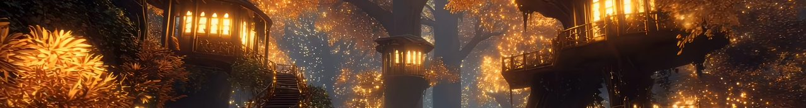
계절의 정원
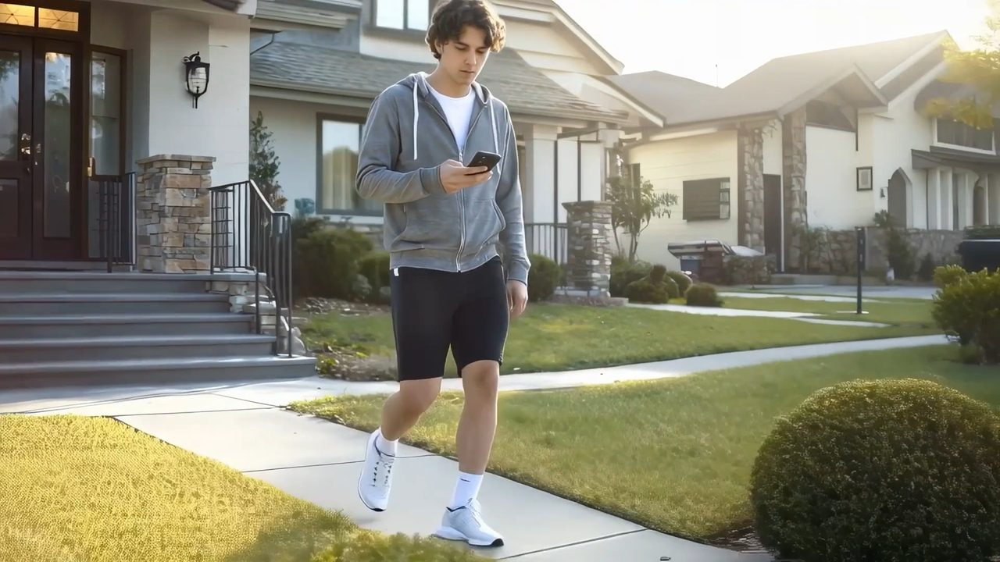
메이플스토리N 쇼케이스 영상
키워드: Premiere Pro5차 수정 납품
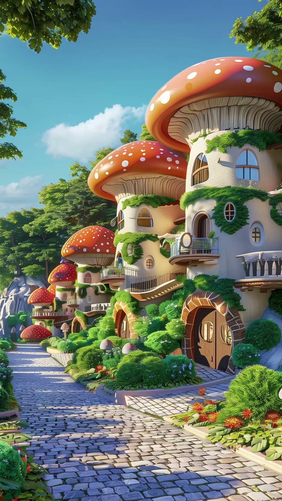
메이플 실사 시리즈
키워드: MidjourneyRunway Gen-2모션 브러시

아이티센 홍보영상
매경미디어그룹 AI 영상광고·숏폼 공모전 우수상

SKT 오픈 2025 AI 홍보영상
SK텔레콤 오픈 2025 AI 홍보 영상 공모전 우수상

구미호: 사라진병기

수장고
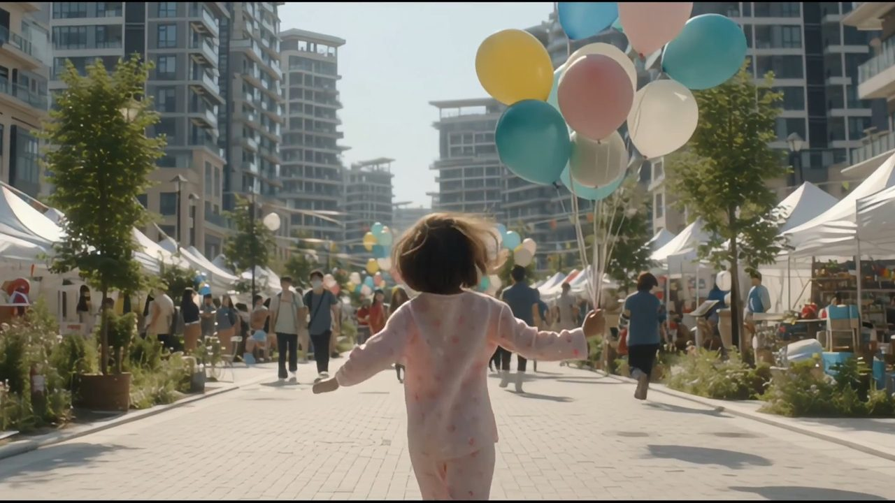
「가능성」 경기북부발전 홍보영상
경기북부발전 AI 콘텐츠 제작 캠프 장려상


작품
- 2026판정 불가1인 단편 · 2:46 · 연세대 AI 콘텐츠 경진대회
키워드: Seedance 2.5캐릭터 일관성AI 에이전트Premiere Pro
최우수상 - 2026UBN — 저승 휴게소 국밥집1인 + 에이전트 · 2026-11 개국한 유튜브 채널의 첫 프로그램 · 1부 3:23 · 2부 2:24 · 채널 연재 중
키워드: Blender 프리비즈AI 에이전트 6종After EffectsElevenLabsSeedance 2.5
- 2026실사풍 코미디 숏폼 EP001–0111인 · 직접 만든 숏폼 제작 스킬
키워드: Claude Code 스킬Seedance 2.5모션 전이CapCut
- 2026네모리 픽셀아트 릴스1인 + 에이전트 · 코드와 이미지 생성 모델로 만드는 픽셀아트 릴스
키워드: 자동 검사기PythonBlenderNano Banana Pro
- 2026세모리 픽셀아트 지식 릴스1인 + 에이전트 · 한 달 만에 팔로워 약 3,700 · 최고 조회수 47.7만
키워드: 자동 검사기PythonKling
- 2026제작 시스템에이전트 · 검사 도구 · 네 프로젝트
키워드: AI 에이전트Claude CodeCodexPython
- 2026face2comics단독 학부 연구논문 · 얼굴→만화 변환 모델 비교
키워드: Stable Diffusion 1.5InstaFlow모델 비교 실험
- 2026닥터리쥬올 3D 제품 영상외주 · 단독 · ComfyUI 워크플로우
키워드: ComfyUI오픈소스
- 2025피노키오: 비긴즈4인 팀 · 씬 7·8 담당 · CGV AI 영화제 · CGV 극장 개봉
키워드: 팀 제작 허브캐릭터 시트ComfyUIPremiere Pro
우수상 - 2025넥슨 메이플스토리N 쇼케이스 영상외주 · 단독
키워드: Premiere Pro5차 수정 납품
- 2025계절의 정원단독 · 초광폭 미디어아트 3968×538
- 2025아이티센 홍보영상단독 · 매경 AI 영상광고·숏폼 공모전우수상
- 2025SKT 오픈 2025 AI 홍보영상단독 · SK텔레콤 공모전우수상
- 2025㈜바른손이앤에이AI 비주얼라이징 용역 3개월 · 결과물 비공개 · 영화·드라마·버추얼 아이돌 · 캐릭터 시트·키비주얼·티저 · 팀 가이드라인
- 2025「가능성」 경기북부발전 홍보영상3인 팀 · 전 공정 참여장려상
- 2025구미호: 사라진병기2인 팀 · 전 공정 참여 · 캐럿 4기 기획전 출품
- 2025수장고3인 팀 · 경비실·유물·CCTV 전시실1 장면
- 2024메이플 실사 시리즈1인 · 인스타그램 · 두 달 만에 팔로워 3만, 최고 3.5만 → 넥슨 공식 의뢰로 이어짐
키워드: MidjourneyRunway Gen-2모션 브러시
그 밖의 작품
- 2025캔디페이 세로 광고외주 · 단독 · 납품
- 2025「마을의 등불」이미지 · 한전아트센터 전시 · 글로벌 AI 아트 공모전특선
- 2025서울시 Try Everything 행사 키비주얼외주 · 단독 · 납품
- 2024해시태그어딕트 브랜드필름본인 브랜드 · 1:41
- 2024더단백 광고개인 작업
- 2024빼빼로데이 광고개인 작업 · 46초
- 2024랩노시 OOH 광고 시안비납품
About
2024년 1월부터 AI로 영상을 만들어왔으며, 기획 및 연출부터 편집과 사운드 마감까지 제작의 전 과정을 수행합니다.
기계공학을 전공하고 프론트엔드 개발을 공부했습니다. 제작에 사용되는 에이전트와 검사 도구를 직접 만들고, 팀이 같이 쓰는 제작 허브와 문서도 만듭니다.
수상
- 2026
- 연세대 AI 콘텐츠 경진대회 최우수상 (「판정 불가」, 1인)
- 2025
- CGV AI 영화제 우수상 (「피노키오: 비긴즈」, 4인 팀)
- 2025
- 매경미디어그룹 AI 영상광고·숏폼 공모전 우수상 (아이티센 과제 출품작, 단독)
- 2025
- SK텔레콤 오픈 2025 AI 홍보 영상 공모전 우수상 (단독)
- 2025
- 경기북부발전 AI 콘텐츠 제작 캠프 장려상 (「가능성」, 3인 팀)
- 2025
- 글로벌 AI 아트 공모전 특선 (「마을의 등불」, 한전아트센터 전시)
경력
- 2025
- ㈜바른손이앤에이 AI 비주얼라이징 용역 · 2025-08-04~11-03.
영화·드라마·버추얼 아이돌 콘텐츠 등 제작, 협업 및 작업 시스템 구축 (결과물은 계약상 공개 불가능)
교육·활동
- 2026
- 전국 연합 프로덕트 빌더 학회 앰퍼샌드 GenAI 운영진
- 2025
- LG유플러스 임직원 AI 콘텐츠 제작 멘토링 · 비주얼아카데미 강의
- 2024–25
- HATESLOP 서강대 생성형 AI 학회 · 코파운더 · 1기 프로듀서 파트장 · 2기 회장. 프로듀서 파트의 커리큘럼 설계·교육자료 제작·강의·운영을 단독 담당.
- 2024–25
- 채널톡 임직원 출강 · 직접 쓴 「Midjourney 간단 가이드북」 사용
- 2024
- 제1회 AI Commercial Festival 주최·운영 (협력 기관: GS넷비전) · 참가 약 100명 해커톤 · 교육자료 제작 · 당일 강의·멘토링
- 2023
- IT 창업 동아리 멋쟁이사자처럼 11기 프론트엔드 · 12기 운영진·디자인 팀장
- 2022–24
- IT 창업 학회 CEOS 18기 회장 · 기획 운영진
서연고카포 창업 학회 파운더스 4기 - 연세대 AI 콘텐츠 부트캠프 최우수 성과자 수료
자격·언어
- ACP Premiere Pro
- AI-POT 1급
- 일본어 일상 회화(현지인과 기초 대화 가능)